Cautious joiner checks a few postups, then joins
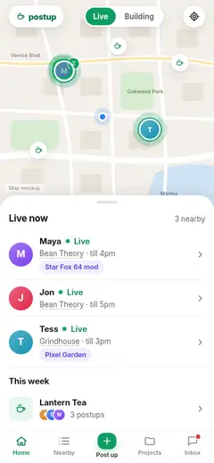
1 · Home page (/)
Opens / in Live mode: map + Live now list. [M1018b] [M1024]
● taps “M”
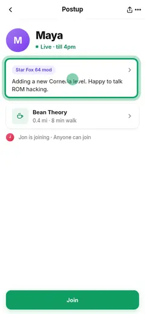
2 · Postup · anyone can join
Taps Maya's row: who, project, cafe, who else is joining. Does not join yet. [FS] [M1024]
● taps “Star Fox 64 mod”

3 · Project
Opens Maya's project to see what she's working on, then Back. [FS] [M1024]
● taps “Maya”
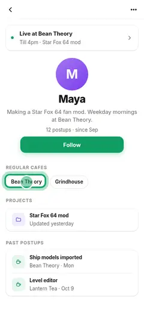
4 · Profile
Opens Maya's profile: postup count, regular cafes, past postups. [FS] [F065] [M1024]
● taps “Bean Theory”
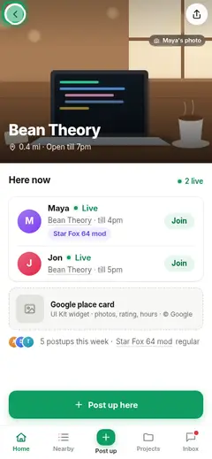
5 · Cafe
Checks the cafe: hero photo, who's here now, Google card. [FS] [M1024]
● taps Back
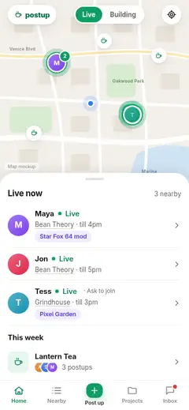
6 · Postup · ask to join
Compares a second postup (Tess approves who joins), then Back. [FS] [M1024]
● taps Back

7 · Postup · anyone can join
Returns to Maya's postup and taps Join (no sign-in sheet; already signed in). [TK§1] [M1024]
● taps “Join”
8 · You're joining
You're joining Maya; Maya is told. [FS] [M1024]
● taps “Directions”
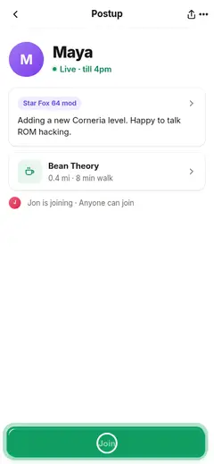
9 · You're joining + dirs
Directions sheet: Apple / Google Maps. [FS] [M1024]
Quick joiner

1 · Home page (/)
Live now list. [M1018b] [M1024]
● taps “M”

2 · Postup · anyone can join
Taps a row, then Join. [FS] [M1024]
● taps “Join”

3 · You're joining
Confirmation. [FS] [M1024]
● taps “Directions”

4 · You're joining + dirs
Directions. [FS] [M1024]

5 · Group chat
Says "on my way" in the postup chat. [F096] [M1024]
First-time visitor, someone is live

1 · Home page (/)
Home opens in Live mode with a one-line welcome. [M1018b] [M1024]
● taps “M”

2 · Postup · anyone can join
Opens a postup; Join shows 🔒. [FS] [M1024]
● taps “Join”

3 · Sign-in sheet · join
Join → sign-in sheet (Apple / Google). [FS] [TK§1] [M1024]
● taps “Join”

4 · You're joining
Signed in and joined in one go; the join is not lost. [FS] [M1018] [M1024]
First-time visitor, nobody live
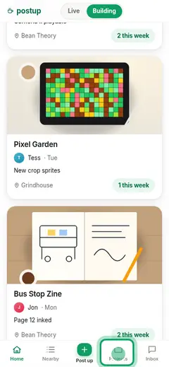
1 · Home page (/)
Home opens in Building: "What people are building", closest first. [M1018b] [M1018c] [M1024]
● taps “Projects”
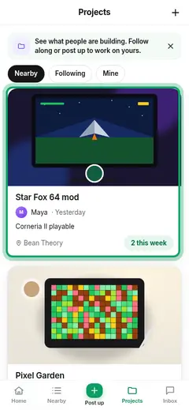
2 · Projects
See all projects. [M1018b] [M1024]
● taps “Star Fox 64 mod”
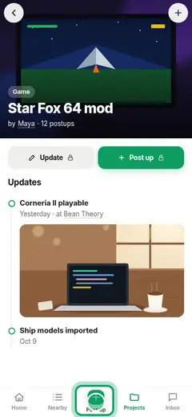
3 · Project
Opens a project; Follow / Post up show 🔒. [FS] [M1024]
● taps “Post up”
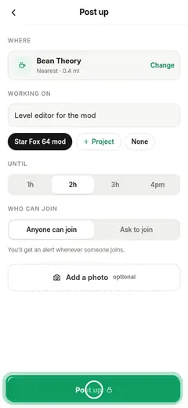
4 · Post up
Taps Post up. [FS] [M1024]
● taps “Post up”
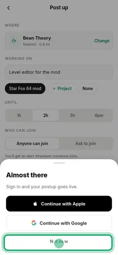
5 · Sign-in sheet · post
Post up 🔒 → sign-in sheet. [FS] [M1024]
● taps “Post up”

6 · You're posted up
You're posted up; invite friends. [FS] [M1024]
Share link to a live postup


Share link to an ended postup
Share link to a project


Ask to join, then get approved (joiner side)

1 · Postup · ask to join
"Tess approves who joins". [FS] [F055]
● taps Back

2 · Ask to join
Short reason. [F061] [F095]
● taps “Send request”

3 · Request sent
Request sent; can cancel. [FS] [drawn]

4 · Inbox · Activity
Activity: "Tess said yes". [FS] [M1024]
● taps “M”

5 · Group chat
Now in the postup chat. [F061] [F096]
Host approves a request


First post up (with sign-in)

1 · Home page (/)
Taps Post up. [M1018b]
● taps “Post up”

2 · Post up
Nearest cafe prefilled. [FS] [F062]
● taps “Bean Theory”

3 · Where are you?
Change → cafe picker by distance. [F062] [R17]
● taps Back

4 · Cafe search
Searches a cafe. [FS]
● taps “Post up”

5 · Sign-in sheet · post
Post up 🔒 → sign-in. [FS] [TK§1]
● taps “Post up”

6 · You're posted up
Posted; link to copy. [FS]
● taps “Invite friends”

7 · You're posted up + share
Invite friends: share sheet. [drawn] [M1024]
Returning poster


Hosting live: extend, edit, end

1 · You're live
+30 min extends. [FS]
● taps “Edit”

2 · Edit postup
Edit cafe/what/until; Save → #live. [FS] [drawn]
● taps “Save”

3 · You're live
Back on live. [FS]
● taps “End postup”

4 · You're live + endlive
End postup → confirm; joiners and waiters alerted. [FS] [drawn]

5 · Home page (/)
Back home. [M1024]
Project builder: create, update, post up for it

1 · Projects
Projects, "+". [FS]
● taps “New project”

2 · New project
Cover, name, kind, one line. [FS] [drawn]
● taps “Create”

3 · Project
New project page. [FS]
● taps “Update”

4 · Project update
Post an update with image. [FS] [R35]
● taps Back

5 · Post up for a project
Post up for this project, now or earlier today. [FS]
● taps “Post up”

6 · You're posted up
Posted, tied to the project. [FS]
Follow a person or project


Postup chat


Report and block

1 · Postup · anyone can join + more
More: profile, share, report, block. [FS] [F059]
● taps “Report”

2 · Report
Reason + details. [F059] [drawn]
● taps “Send report”

3 · Reported
Thanks; offer to block. [FS]

4 · Postup · anyone can join + block
Block: neither sees the other; they aren't told. [FS] [F059]

5 · Settings
Blocked people list to undo. [FS] [F065]